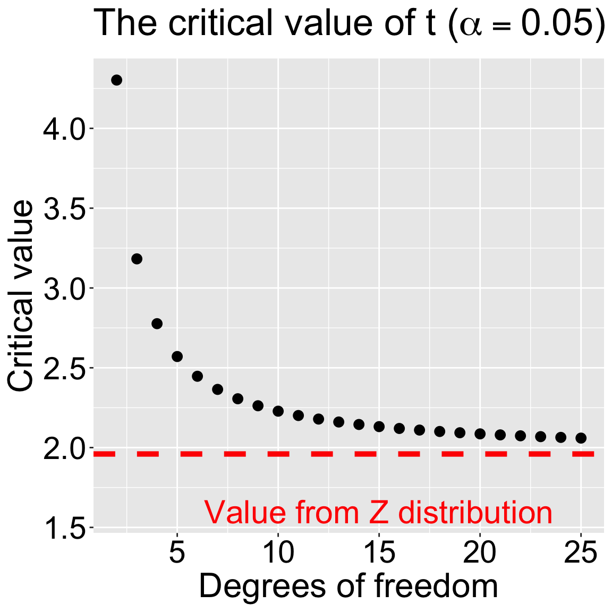

Motivating Example: You have estimated the mean of a single continuous variable, but you need to report its uncertainty. In this chapter we’ll use the t-distribution to find the 95% confidence interval.
Learning Goals: By the end of this section, you will be able to:
Define and calculate the standard error for the t-distribution.
Explain the concept of degrees of freedom and how it relates to sample size.
Use qt() to find the critical value.
Calculate a confidence interval for a population mean using the t-distribution.
A major goal of statistics is not just to estimate parameters, but to explicitly communicate the uncertainty in these estimates. This section introduces the concepts and calculations to present confidence intervals for estimates of the mean.
Assuming a t-distribution, and data that conform to its assumptions, of course.
The Standard Error
We know that the standard error is the standard deviation of the sampling distribution. We also saw that the standard error of the normal distribution is a parameter that equals:
Of course we don’t know \(\sigma\), so to find the standard error of the t-distribution we replace the unknown population standard deviation, \(\sigma\), with our estimate of it, \(s\):
As you can see the only difference between the standard error of the normal distribution (\(\sigma_\bar{x}\)) and the standard error of the t distribution (\(s_\bar{x}\)) is that we replace the sample standard deviation, \(\sigma\), with its estimate, \(s\). As you can see, the main differences between the formula for the population standard deviation (\(\sigma\)) and the sample standard deviation (\(s\)) are:
We use the known population mean (\(\mu\)) for \(\sigma\) and the estimated sample mean (\(\bar{x}\)) for \(s\).
We divide by \(n\) when calculating \(\sigma\), but by \(n-1\) when calculating \(s\).
It turns out these two differences are related!!!
Calculating the mean \(\bar{x}\) from our data means that if we know the mean and all but one observation, we could confidently find the last value with simple algebra. This is why we divide by \(n-1\) instead of \(n\) – we only have \(n -1\) observations that provide information beyond the mean. This concept is directly related to the degrees of freedom!
The degrees of freedom indicate how many individual data points we need to know after building our model, to know the rest of the data points. For example, if you have a sample of size:
\(n = 1\), and I tell you the sample mean, you know every data point, so there are zero degrees of freedom.
\(n = 2\), and I tell you the sample mean, you need one more data point to fill in the rest, leaving one degree of freedom.
\(n = 3\), and I tell you the sample mean, you need two more data points to fill in the rest, so there are two degrees of freedom.
Thus, when estimating a sample mean \(\overline{x}\), from a sample of size, \(n\), the degrees of freedom equal the sample size minus one: \(\text{df}_t = n-1\). So, for our case:
Range shift summary with df!
mean
sd
n
se
df
39.33
30.66
31
5.51
30
# summarize datarange_shift_summary <- range_shift_summary |>mutate(df = n -1)
Now that we have our degrees of freedom, we know which t-distribution we’re working with (Figure 1)!
Plotting \(t_{30}\).
t_30 <-tibble(t =seq(-5,5,.001))|>mutate(prob_density =dt(x = t, df =30))ggplot(t_30, aes(x = t, y = prob_density)) +geom_area(fill ="white", color ="black")+labs(title ="The t-distribution with 30 degrees of freedom", y ="Probability density")+scale_x_continuous(breaks =seq(-4,4,2))
Figure 1: The probability density function for a t-distribution with 30 degrees of freedom. The t-score is on the x-axis, and the probability density is on the y-axis.

Figure 2: Critical values for the t-distribution with x degrees of freedom (α= 0.05). The dashed red line shows the Z critical value (i.e. df = ∞).
Calculating a Confidence Interval
Because the t statistic measures how many standard errors our estimate is from the true parameter value, we can find a \(1-\alpha\)% confidence interval by:
Finding the critical t value, \(t_{\alpha/2,\text{ df = }30}\) that captures the middle \(1-\alpha\) of the t distribution.
Bringing this CI to the scale of our data by multiplying it by our estimate of the standard error, \(s_\bar{x}\),
Reporting the \((1-\alpha)\%\text{ CI }\) as \(\overline{x} \pm t_{\alpha/2} \times s_\bar{x}\), where \(t_{\alpha/2}\) is the critical two-tailed t value for a specified \(\alpha\) level, which we can find R using the qt() function.
Critical values for a 95% confidence interval with two to twenty five degrees of freedom are shown in Figure 2. Note that this approaches 1.96 (the Z-critical value) \(df \to\infty\).
Note: We divide \(\alpha\) by 2 because a two-sided CI splits the remaining area equally across both tails.
Worked example
So to find the 95% Confidence interval for our example:
95% CI with 30 df = \(\overline{x} \pm t_{.05/2,\text{ df = } 30} \times s_\bar{x}\).
95% CI for our data = \(39.33 \pm t_{.05/2,\text{ df = } 30} \times 5.51\).
\(\bar{x} = 39.33\).
\(s_\bar{x} = 5.51\).
Because we know that roughly 95% of the Z is between two and negative two, and because the t-distribution approaches the Z distribution as we have more degrees of freedom, we can guesstimate the 95% CI as \(39.33 \pm 2 \times 5.51\). i.e. The 95% CI is roughly between 28 and 50.
More precisely the qt() function finds a critical value of qt(0.025, df= 30, lower.tail = FALSE) = 2.042. So:
95% CI for our data = \(39.33 \pm 2.042 \times 5.51 = 39.33 \pm 11.25\) i.e. between 28.1 and 50.6.
alpha <-0.05range_shift_summary <- range_shift_summary |>mutate(df = n-1,crit_val =qt(p = alpha/2, df = df, lower.tail =FALSE),lower_CI = mean - se * crit_val,upper_CI = mean + se * crit_val)
qt() takes the arguments, p and df, and finds the critical value that separates the lower p tail from the rest of the t distribution with df degrees of freedom. The optional argument lower.tail tells R if we’re coming in from the upper or lower tail. Because the t-distribution is symmetric this simply changes the sign of qt()’s output.
The q_() function is available for many common distributions. For example qnorm(.025, lower.tail = FALSE), returns 1.96, the Z value that marks the upper 2.5% of the Z distribution.
Comparison to the bootstrap CI
When our sample size is not too small the 95% confidence interval from the t-distribution will be quite close to that generated by bootstrapping (see below).
So why use the t-distribution? That’s a good question! The best answer is “tradition”. The second best answer is that the t-distribution-based confidence interval is faster, reproducible, and less computationally demanding than the bootstrap-based confidence interval.
We have already considered the interpretation of confidence intervals. But it is worth revisiting, because the confidence interval is a weird concept. If we repeatedly sampled from a population and built a \(1-\alpha\) confidence interval from each sample, then about \(1-\alpha\) of those intervals would contain the true mean. Feel free to revisit the confidence interval webapp from before.
The tricky thing is that we don’t have a population, we have a sample, so we do not know the probability that a confidence interval contains the true parameter value. In fact in a frequentist perspective (which we take on for most of this book), the question “What is the probability that a confidence interval contains the true parameter” is somewhat incoherent and cannot be answered. The true parameter is either inside or outside the confidence interval—there is no probability about it.
In a Bayesian framework, this question is coherent and can be answered, but doing so requires a different set of equations, assumptions, and worldviews, and will not generally result in the same answer as found by a confidence interval.
So we do this strange thing – we use our sample estimate and standard error to approximate the sampling distribution. Then we mark off the middle \(1-\alpha\) of that distribution and call it our \(1-\alpha\) confidence interval. We then repeat the magic words “We are 95% confident that the true population mean lies within our 95% confidence interval”.
A 95% interval is NOT a range with a 95% chance of containing the true mean..
Wrong: “There is a 95% chance the true mean is in this interval.”
Right: “Our method of constructing intervals will contain the true mean about 95% of the time.”
Visualizing Confidence Intervals
Figure 3: Change in the elevation of 31 species. Data from Chen et al. (2011). code here. The error bar represents the t-based 95% confidence interval.
We have previously used ggplot’s stat_summary() function to plot 95% bootstrap confidence intervals with stat_summary(fun.data = "mean_cl_boot"). We do basically the same thing for the t -based confidence interval, but replace "mean_cl_boot" with"mean_cl_normal". Figure 3 is a slight elaboration of this code:
Chen, I.-C., Hill, J. K., Ohlemüller, R., Roy, D. B., & Thomas, C. D. (2011). Rapid range shifts of species associated with high levels of climate warming. Science, 333(6045), 1024–1026. https://doi.org/10.1126/science.1206432

![This plot illustrates **elevational range shifts** (in meters) in response to climate change. The **y-axis** represents the elevational range shift, with values ranging from -100 to 120 meters. Each point on the plot corresponds to a data entry, with **teal-colored points** indicating shifts that are **uphill** (above 0 meters), and **red-colored points** representing shifts that are **downhill** (below 0 meters). The points have been jittered horizontally to improve visibility and reduce overlap. A **dashed horizontal line** at **y = 0 meters** serves as a reference point to separate uphill shifts from downhill shifts. Two labels are positioned next to the groups of points: a teal *uphill* label near the points above the zero line, and a red *downhill* label near the points below the zero line. The plot also includes a **vertical error bar** at x = 0, showing the mean and confidence interval for the elevational range shifts.](t_CI_files/figure-html/fig-eleva1-1.png)